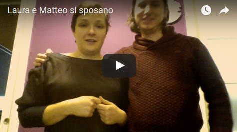
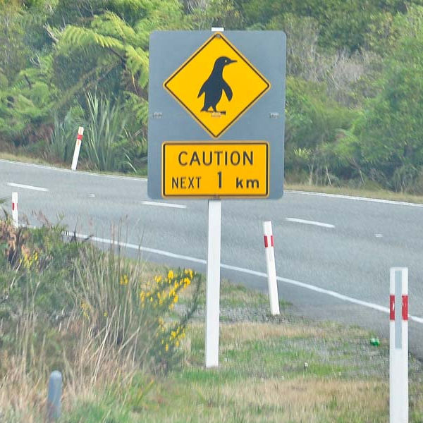

Laura e Matteo si sposano

Ricevimento
il 15/07/2017 alle 19:00
alla Taverna di Bibbiano
Loc. Bibbiano la Taverna, 35
53034 Colle di Val d'Elsa (Siena)
Mappa
I consigli della sposa
- E’ Luglio, fa caldo, non svenite.
- La cerimonia si terrà in uno dei giardini del castello di Monteriggioni, da notare: il Castello di Monteriggioni è l’antica rocca di Monteriggioni, non l’hotel con l’ononimo nome.
- La cerimonia si svolgerà durante la festa medievale del borgo, quindi ci sarà tanto casino ( gli organizzatori ci hanno parlato di 5 o 6 mila persone, noi speriamo che si sbaglino), preparatevi!
- L’entrata alla festa necessita di un biglietto, ancora non sappiamo come il comune ci farà entrare, ma abbiate fiducia che prima del matrimonio vi daremo le istruzioni.
- Il parcheggio è in attorno al castello in un campo adibito a tale scopo. Ripeto un campo!
- Dal parcheggio al castello ci saranno 300 metri in salita, decidete un po’ voi con che scarpe venire!
- La cerimonia inizia alle 5.30 e sappiate che saremo in orario, pechè ad una certa ci buttano fuori dal giardino per fare posto ad altri.
- Appena entrati dalla porta a Monteriggioni proseguite dritto di fronte a voi, superate la piazza della cisterna e dopo pochi passi vedrete un’altra porta:Monteriggioni è già finita! Voi saggiamente girate a sinistra prima della discesa e subito sulla destra troverete l’ingresso del giardino sopraelevato. Se trovate un’altra piazza significa che dovete girarvi a destra e entrare nel giardino.
- Post cerimonia vi potete godere la festa medievale, sappiate che io e Matteo siamo molto legati a ‘sta festa: è stata un po’ l’inizio del tutto.
- Se volete comprare qualcosa alla festa si può fare solo con la moneta della festa: ci sono due banchini all’interno delle mura dove potete farvi cambiare gli euri.
- Dalle 19 potete andare a iniziare a mangiare all’agriturismo; arrivate quando vi pare, noi faremo altrettanto!
- L’aperitivo è attorno alla piscina, per arrivarci non rotolate, sennò il bagno è assicurato.
- Per favore se avete intolleranze, allergie o semplicemente se siete schizzinosi: ditelo! Vi faremo mangiare in un tavolo lontano da tutti!No, seriamente avvertiteci. Anche se avete bambini, noi non avendoli non sappiamo cosa mangiano, se mangiano, quando, perchè, dove...cmq ci hanno assicurato che c’è un comodo posto dove parcheggiare le carrozzine cosìcchè possano dormire tutti vicini vicini.
- Direi che i consigli sono finiti...ah dimenticavo: DIVERTITEVI!
Viaggio di Nozze
Non siamo ancora certi al 100%, ma ci piacerebbe andare in Nuova Zelanda. Principalmente perchè io (Laura) voglio vedere i pinguini e animali pucciosi e Matteo mi ha assicurato che lì ci sono. Non ho idea perchè Matteo ci voglia andare, forse avrà visto un documentario.

Cmq se volete contribuire al nostro viaggio alla scoperta dei Pinguini (sicuramente ne toccherò uno e mi farà schifino) e di non so che altro, potete usare il seguente IBAN come riferimento:
IT 79 A 01030 14208 000000422777
Intestato a Laura Brandini e Matteo Suppo